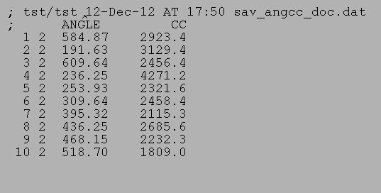
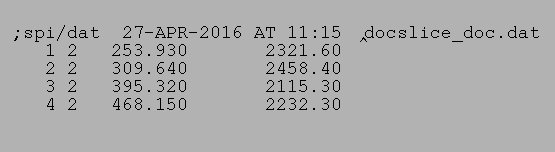

| .OPERATION: | DOC SLICE | ; Take slice from doc file |
| .INPUT DOCUMENT FILE: | sav_doc_angcc_1 | ; Doc file (input) |
| .OUTPUT DOCUMENT FILE: | docslice_doc | ; Slice doc file (output) |
| .KEYS TO PLACE IN NEW DOC FILE: | 5-7,9 | ; Keys wanted |
| INPUT DOC FILE |
|---|
|  |
| sav_angcc_doc.jpg |
| OUTPUT DOC FILE |
|---|
|  |
| docslice_doc |